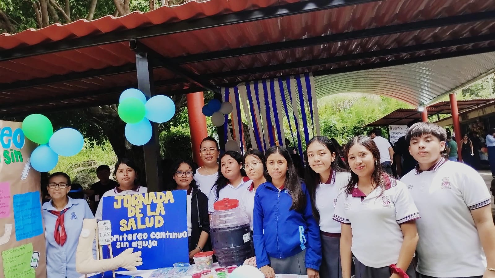

Introduccion
En este proyecto los alumnos del COBAEV plantel 46 realizaron una pagina wed relacionada al proyecto del PAEC y el PEC relacionada a todas las UAC que realizaron en todo el semestre relacionadas al proyecto final del PEC mostrando imagenes de cada actividad realizada en todo el segundo semestre que tiene relacion a el prototipo elegido que se realizo una maqueta "Monitoreo continuo sin aguja ". Es importante presentar la importancia,los veneficios que tiene el "monitoreo continuo sin aguja" ya que ayuda a las personas que sufren de la glucosa alta ya que adiario se tienen que andar pinchandose constantemente.Las personas con diabetes tenian que usar agujas varias veces al dia para saber como estaban sus niveles de azucar en la sangre.Pero eso cambio ya que se utilizan sensores que se colocan en la piel y que mide la glucosa de forma continua.
UAC PARTICIPANTES
INTEGRANTES DE EQUIPO:
